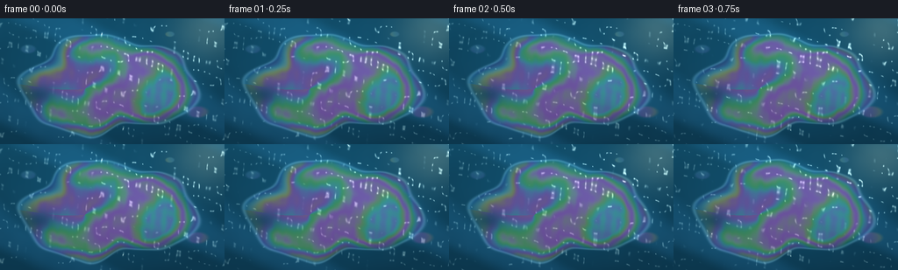
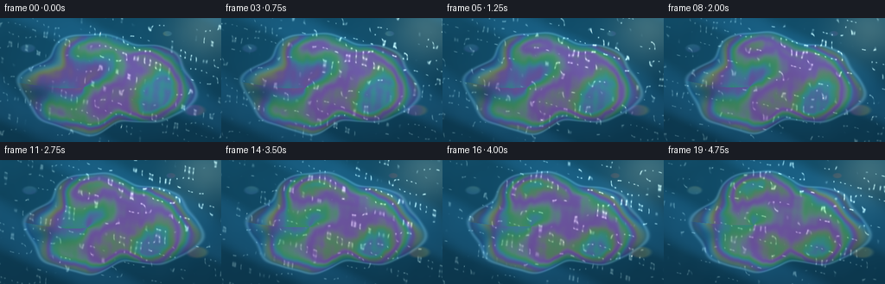
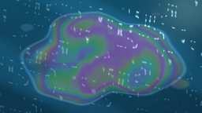

CODING AGENTS AS PIXEL WORLD MODELS
traex/GPT-5.6-Sol · phygen_084
点击播放 · 原生 RGB 像素
逐轮保存的候选
回放视频、检查图与代码变化。
每份候选均可单独播放。实际图片检查记录在下方工具轨迹中。
候选 01播放与检查图
点击播放 · 原生 RGB 像素


展开代码变化
--- 上一保存版本 +++ 本次保存版本 @@ -0,0 +1,175 @@ +from pathlib import Path +import numpy as np +from PIL import Image +import artifact_io + +# Procedural macro view of a very thin gasoline film floating on rippling water. +# Supersampling keeps the interference contours and sun sparkles clean at 256x144. +W, H, N = 256, 144, 20 +S = 2 +w, h = W*S, H*S +rng = np.random.default_rng(8401) + +# Wide cinematic coordinate system. +x = np.linspace(-1.72, 1.72, w, endpoint=False) +y = np.linspace(-0.97, 0.97, h, endpoint=False) +X, Y = np.meshgrid(x, y) + +# Fixed, very fine surface/grain texture. It is advected rather than randomized per frame. +phases = rng.uniform(0, 2*np.pi, 18) +angles = rng.uniform(0, np.pi, 18) +freqs = rng.uniform(7, 24, 18) +amps = rng.uniform(.01, .045, 18) + +def smoothstep(a, b, z): + z = np.clip((z-a)/(b-a), 0, 1) + return z*z*(3-2*z) + +def harmonic_noise(xx, yy, start=0, count=10): + out = np.zeros_like(xx) + norm = 0.0 + for k in range(start, start+count): + j = k % len(phases) + f = freqs[j] + v = np.cos(angles[j])*xx + np.sin(angles[j])*yy + a = amps[j] + out += a*np.sin(f*v + phases[j]) + norm += a + return out / max(norm, 1e-6) + +frames = [] +for fi in range(N): + t = fi / 4.0 + + # Several long wind-driven wave trains, with analytic slopes for lighting. + hgt = np.zeros_like(X) + gx = np.zeros_like(X) + gy = np.zeros_like(X) + waves = [ + (.050, 4.1, .30, 1.04), + (.027, 7.8, 1.23, .73), + (.015, 13.4, 2.52, 1.42), + (.009, 23.0, 1.83, .82), + (.006, 35.0, .08, 1.55), + ] + for a, f, ang, speed in waves: + ca, sa = np.cos(ang), np.sin(ang) + phase = f*(ca*X + sa*Y) - speed*t + .7*np.sin(.45*Y + .18*t) + hgt += a*np.sin(phase) + # main derivative, sufficient for a natural changing normal field + gx += a*f*ca*np.cos(phase) + gy += a*f*sa*np.cos(phase) + + micro = harmonic_noise(X + .018*t, Y - .009*t, 0, 12) + hgt += .005*micro + + # Deep teal water: sky reflection, depth gradient, and luminous ripple crests. + sky = np.clip(.53 + .22*(-Y) + .18*hgt, 0, 1) + water = np.zeros((h, w, 3), dtype=float) + water[..., 0] = 10 + 13*sky + water[..., 1] = 46 + 55*sky + water[..., 2] = 67 + 69*sky + + # Broad blue sky sheen across the upper/right portion of the water. + sheen = .5 + .5*np.sin(2.1*X - 3.5*Y + .25*np.sin(5*Y) - .34*t) + sheen = smoothstep(.48, .98, sheen) + water += sheen[...,None] * np.array([8, 18, 26]) + + # Grazing sunlight reflected by wave facets. Offset changes as waves travel. + # Two nearby powers form narrow glints and softer silver highlights. + alignment = np.clip(1.0 - ((gx-.145)**2/0.030 + (gy+.075)**2/0.020), 0, 1) + spec = alignment**8 + softspec = alignment**2.8 + # Sun-glare envelope from upper right, leaving the lower-left deep and readable. + glare_env = .32 + .68*np.exp(-((X-1.05)**2/1.75 + (Y+.53)**2/.56)) + water += (softspec*glare_env)[...,None] * np.array([28, 35, 38]) + water += (spec*glare_env)[...,None] * np.array([175, 167, 142]) + + # The slick drifts only slightly. Wave displacement makes its edge ride on the surface. + cx = -.08 + .022*t + cy = .055 - .008*t + xd = X - cx + .030*np.sin(4.0*Y - .52*t) + .018*hgt + yd = Y - cy + .025*np.sin(3.1*X + .37*t) - .010*hgt + th = np.arctan2(yd/.73, xd) + rr = np.sqrt((xd/1.34)**2 + (yd/.73)**2) + + # An asymmetric, lobed outline. Low frequency distortions resemble a spreading film. + boundary = (1.0 + .085*np.sin(3*th+1.0) + .055*np.sin(5*th-1.4) + + .035*np.sin(8*th+.5) + .025*harmonic_noise(.8*X, .8*Y, 2, 6)) + signed = boundary - rr + mask = smoothstep(-.035, .045, signed) + + # A shallow notch and several detached wisps/drops make the layer visibly floating. + notch = np.exp(-((X+1.15-.01*t)/.26)**2 - ((Y-.20)/.15)**2) + mask *= (1 - .72*notch) + drop1 = np.exp(-((X-1.30-.015*t)/.18)**2 - ((Y-.47)/.095)**2) + drop2 = np.exp(-((X+1.29-.010*t)/.13)**2 - ((Y+.50)/.075)**2) + drop3 = np.exp(-((X-.88-.020*t)/.085)**2 - ((Y+.73)/.050)**2) + mask = np.maximum(mask, smoothstep(.25, .66, drop1)) + mask = np.maximum(mask, smoothstep(.30, .69, drop2)) + mask = np.maximum(mask, smoothstep(.36, .72, drop3)) + + # A smoothly flowing thickness field (nanometres). Subtle coordinate warping makes + # interference bands curl around each other instead of looking like straight stripes. + ux = xd + .075*np.sin(2.7*yd + .33*t) + .027*np.sin(9*yd - .21*t) + uy = yd + .052*np.sin(2.2*xd - .26*t) + radial = np.sqrt((ux+.31)**2 + (1.16*uy-.08)**2) + flow = (112*np.sin(2.35*ux - 1.15*uy + .27*t) + + 74*np.sin(3.65*uy + .78*ux - .17*t) + + 47*np.cos(5.1*radial - 1.2*np.arctan2(uy, ux+.31) + .15*t) + + 24*np.sin(8.3*ux + 3.0*uy + .11*t)) + # Film is thinner near the boundary, giving classic close rainbow contours. + edge_depth = np.clip(signed, 0, .32) + thickness = 350 + flow + 170*smoothstep(0, .30, edge_depth) + thickness += 16*micro + thickness = np.clip(thickness, 95, 720) + + # Thin-film interference sampled at three representative wavelengths. Incidence + # angle varies with the actual water normal, tying colors to moving ripples. + cosi = 1 / np.sqrt(1 + .23*(gx*gx + gy*gy)) + film_rgb = np.empty_like(water) + wavelengths = np.array([650., 540., 455.]) + for c, lam in enumerate(wavelengths): + phase = 2*np.pi * (2*1.40*thickness*cosi) / lam + # reflected thin-film intensity; second harmonic adds pearly complexity + film_rgb[..., c] = .22 + .68*np.sin(.5*phase + .20)**2 + .10*np.sin(phase*1.03)**2 + + # Preserve blue water underneath: gasoline is a transparent sheet, not opaque paint. + pearly = np.stack([ + 54 + 145*film_rgb[...,0], + 58 + 148*film_rgb[...,1], + 62 + 154*film_rgb[...,2]], axis=-1) + film_alpha = (.30 + .23*smoothstep(-.01, .22, signed)) * mask + result = water*(1-film_alpha[...,None]) + pearly*film_alpha[...,None] + + # The slick is smoother than surrounding water and therefore catches broader sunlight. + film_gloss = (softspec**.62) * mask * glare_env + result += film_gloss[...,None] * np.array([54, 51, 42]) + + # Bright/dark meniscus at the edge clearly identifies the perimeter of the layer. + edge = np.exp(-(signed/.024)**2) + inner_edge = np.exp(-((signed-.025)/.023)**2) + result += edge[...,None] * np.array([31, 39, 42]) + result -= inner_edge[...,None] * np.array([12, 8, 2]) + + # Sparse star-like solar sparkles on water and on the slick; their locations derive + # from traveling waves and hence move coherently instead of flickering randomly. + spark_field = (np.sin(48*X + 13*Y - 3.4*t) * np.sin(11*X - 39*Y + 2.2*t)) + spark = smoothstep(.965, .996, alignment) * smoothstep(.77, .98, spark_field) + result += spark[...,None] * np.array([175, 164, 132]) + + # Gentle lens/sun haze and natural edge vignette. + haze = np.exp(-((X-1.48)**2/.28 + (Y+.80)**2/.20)) + result = result*(1-.09*haze[...,None]) + np.array([242,226,174])*haze[...,None]*.22 + vignette = 1 - .14*np.clip((X/1.8)**2 + (Y/1.1)**2, 0, 1) + result *= vignette[...,None] + + # Fixed sensor grain kept very subdued. + grain = 1.7*harmonic_noise(X, Y, 6, 10) + result += grain[...,None] + result = np.clip(result, 0, 255).astype(np.uint8) + frame = Image.fromarray(result, 'RGB').resize((W,H), Image.Resampling.LANCZOS) + frames.append(np.asarray(frame, dtype=np.uint8)) + +frames = np.stack(frames) +artifact_io.save(frames, Path(__file__).resolve().parent)
可观测工具轨迹
实际执行的命令与返回图片。
命令 1exit 0
/bin/bash -lc "cat prompt.txt && printf '\\n---RULES---\\n' && cat GENERATION_RULES.md && printf '\\n---SPEC---\\n' && cat task_spec.json"
命令 2exit 0
/bin/bash -lc "find . -maxdepth 2 -type f -printf '%p\\n' | sort"
命令 3exit 0
/bin/bash -lc "sed -n '1,240p' artifact_io.py"
命令 4exit 0
/bin/bash -lc "cat > generate.py <<'PY'
from pathlib import Path
import numpy as np
from PIL import Image
import artifact_io
# Procedural macro view of a very thin gasoline film floating on rippling water.
# Supersampling keeps the interference contours and sun sparkles clean at 256x144.
W, H, N = 256, 144, 20
S = 2
w, h = W*S, H*S
rng = np.random.default_rng(8401)
# Wide cinematic coordinate system.
x = np.linspace(-1.72, 1.72, w, endpoint=False)
y = np.linspace(-0.97, 0.97, h, endpoint=False)
X, Y = np.meshgrid(x, y)
# Fixed, very fine surface/grain texture. It is advected rather than randomized per frame.
phases = rng.uniform(0, 2*np.pi, 18)
angles = rng.uniform(0, np.pi, 18)
freqs = rng.uniform(7, 24, 18)
amps = rng.uniform(.01, .045, 18)
def smoothstep(a, b, z):
z = np.clip((z-a)/(b-a), 0, 1)
return z*z*(3-2*z)
def harmonic_noise(xx, yy, start=0, count=10):
out = np.zeros_like(xx)
norm = 0.0
for k in range(start, start+count):
j = k % len(phases)
f = freqs[j]
v = np.cos(angles[j])*xx + np.sin(angles[j])*yy
a = amps[j]
out += a*np.sin(f*v + phases[j])
norm += a
return out / max(norm, 1e-6)
frames = []
for fi in range(N):
t = fi / 4.0
# Several long wind-driven wave trains, with analytic slopes for lighting.
hgt = np.zeros_like(X)
gx = np.zeros_like(X)
gy = np.zeros_like(X)
waves = [
(.050, 4.1, .30, 1.04),
(.027, 7.8, 1.23, .73),
(.015, 13.4, 2.52, 1.42),
(.009, 23.0, 1.83, .82),
(.006, 35.0, .08, 1.55),
]
for a, f, ang, speed in waves:
ca, sa = np.cos(ang), np.sin(ang)
phase = f*(ca*X + sa*Y) - speed*t + .7*np.sin(.45*Y + .18*t)
hgt += a*np.sin(phase)
# main derivative, sufficient for a natural changing normal field
gx += a*f*ca*np.cos(phase)
gy += a*f*sa*np.cos(phase)
micro = harmonic_noise(X + .018*t, Y - .009*t, 0, 12)
hgt += .005*micro
# Deep teal water: sky reflection, depth gradient, and luminous ripple crests.
sky = np.clip(.53 + .22*(-Y) + .18*hgt, 0, 1)
water = np.zeros((h, w, 3), dtype=float)
water[..., 0] = 10 + 13*sky
water[..., 1] = 46 + 55*sky
water[..., 2] = 67 + 69*sky
# Broad blue sky sheen across the upper/right portion of the water.
sheen = .5 + .5*np.sin(2.1*X - 3.5*Y + .25*np.sin(5*Y) - .34*t)
sheen = smoothstep(.48, .98, sheen)
water += sheen[...,None] * np.array([8, 18, 26])
# Grazing sunlight reflected by wave facets. Offset changes as waves travel.
# Two nearby powers form narrow glints and softer silver highlights.
alignment = np.clip(1.0 - ((gx-.145)**2/0.030 + (gy+.075)**2/0.020), 0, 1)
spec = alignment**8
softspec = alignment**2.8
# Sun-glare envelope from upper right, leaving the lower-left deep and readable.
glare_env = .32 + .68*np.exp(-((X-1.05)**2/1.75 + (Y+.53)**2/.56))
water += (softspec*glare_env)[...,None] * np.array([28, 35, 38])
water += (spec*glare_env)[...,None] * np.array([175, 167, 142])
# The slick drifts only slightly. Wave displacement makes its edge ride on the surface.
cx = -.08 + .022*t
cy = .055 - .008*t
xd = X - cx + .030*np.sin(4.0*Y - .52*t) + .018*hgt
yd = Y - cy + .025*np.sin(3.1*X + .37*t) - .010*hgt
th = np.arctan2(yd/.73, xd)
rr = np.sqrt((xd/1.34)**2 + (yd/.73)**2)
# An asymmetric, lobed outline. Low frequency distortions resemble a spreading film.
boundary = (1.0 + .085*np.sin(3*th+1.0) + .055*np.sin(5*th-1.4)
+ .035*np.sin(8*th+.5) + .025*harmonic_noise(.8*X, .8*Y, 2, 6))
signed = boundary - rr
mask = smoothstep(-.035, .045, signed)
# A shallow notch and several detached wisps/drops make the layer visibly floating.
notch = np.exp(-((X+1.15-.01*t)/.26)**2 - ((Y-.20)/.15)**2)
mask *= (1 - .72*notch)
drop1 = np.exp(-((X-1.30-.015*t)/.18)**2 - ((Y-.47)/.095)**2)
drop2 = np.exp(-((X+1.29-.010*t)/.13)**2 - ((Y+.50)/.075)**2)
drop3 = np.exp(-((X-.88-.020*t)/.085)**2 - ((Y+.73)/.050)**2)
mask = np.maximum(mask, smoothstep(.25, .66, drop1))
mask = np.maximum(mask, smoothstep(.30, .69, drop2))
mask = np.maximum(mask, smoothstep(.36, .72, drop3))
# A smoothly flowing thickness field (nanometres). Subtle coordinate warping makes
# interference bands curl around each other instead of looking like straight stripes.
ux = xd + .075*np.sin(2.7*yd + .33*t) + .027*np.sin(9*yd - .21*t)
uy = yd + .052*np.sin(2.2*xd - .26*t)
radial = np.sqrt((ux+.31)**2 + (1.16*uy-.08)**2)
flow = (112*np.sin(2.35*ux - 1.15*uy + .27*t)
+ 74*np.sin(3.65*uy + .78*ux - .17*t)
+ 47*np.cos(5.1*radial - 1.2*np.arctan2(uy, ux+.31) + .15*t)
+ 24*np.sin(8.3*ux + 3.0*uy + .11*t))
# Film is thinner near the boundary, giving classic close rainbow contours.
edge_depth = np.clip(signed, 0, .32)
thickness = 350 + flow + 170*smoothstep(0, .30, edge_depth)
thickness += 16*micro
thickness = np.clip(thickness, 95, 720)
# Thin-film interference sampled at three representative wavelengths. Incidence
# angle varies with the actual water normal, tying colors to moving ripples.
cosi = 1 / np.sqrt(1 + .23*(gx*gx + gy*gy))
film_rgb = np.empty_like(water)
wavelengths = np.array([650., 540., 455.])
for c, lam in enumerate(wavelengths):
phase = 2*np.pi * (2*1.40*thickness*cosi) / lam
# reflected thin-film intensity; second harmonic adds pearly complexity
film_rgb[..., c] = .22 + .68*np.sin(.5*phase + .20)**2 + .10*np.sin(phase*1.03)**2
# Preserve blue water underneath: gasoline is a transparent sheet, not opaque paint.
pearly = np.stack([
54 + 145*film_rgb[...,0],
58 + 148*film_rgb[...,1],
62 + 154*film_rgb[...,2]], axis=-1)
film_alpha = (.30 + .23*smoothstep(-.01, .22, signed)) * mask
result = water*(1-film_alpha[...,None]) + pearly*film_alpha[...,None]
# The slick is smoother than surrounding water and therefore catches broader sunlight.
film_gloss = (softspec**.62) * mask * glare_env
result += film_gloss[...,None] * np.array([54, 51, 42])
# Bright/dark meniscus at the edge clearly identifies the perimeter of the layer.
edge = np.exp(-(signed/.024)**2)
inner_edge = np.exp(-((signed-.025)/.023)**2)
result += edge[...,None] * np.array([31, 39, 42])
result -= inner_edge[...,None] * np.array([12, 8, 2])
# Sparse star-like solar sparkles on water and on the slick; their locations derive
# from traveling waves and hence move coherently instead of flickering randomly.
spark_field = (np.sin(48*X + 13*Y - 3.4*t) * np.sin(11*X - 39*Y + 2.2*t))
spark = smoothstep(.965, .996, alignment) * smoothstep(.77, .98, spark_field)
result += spark[...,None] * np.array([175, 164, 132])
# Gentle lens/sun haze and natural edge vignette.
haze = np.exp(-((X-1.48)**2/.28 + (Y+.80)**2/.20))
result = result*(1-.09*haze[...,None]) + np.array([242,226,174])*haze[...,None]*.22
vignette = 1 - .14*np.clip((X/1.8)**2 + (Y/1.1)**2, 0, 1)
result *= vignette[...,None]
# Fixed sensor grain kept very subdued.
grain = 1.7*harmonic_noise(X, Y, 6, 10)
result += grain[...,None]
result = np.clip(result, 0, 255).astype(np.uint8)
frame = Image.fromarray(result, 'RGB').resize((W,H), Image.Resampling.LANCZOS)
frames.append(np.asarray(frame, dtype=np.uint8))
frames = np.stack(frames)
artifact_io.save(frames, Path(__file__).resolve().parent)
PY
python generate.py
ls -lh pixels.npz inspection.png index.html frames/00.png"命令 5exit 0
/bin/bash -lc "python - <<'PY'
import numpy as np
z=np.load('pixels.npz')['pixels']
assert z.shape==(144,256,20)
assert z.dtype==np.uint32
# unpack and report frame-to-frame change, confirming coherent animation exists
f=np.stack([((z>>16)&255),((z>>8)&255),(z&255)],axis=-1).transpose(2,0,1,3).astype(float)
d=np.abs(np.diff(f,axis=0))
print('shape',f.shape,'range',f.min(),f.max(),'mean',round(f.mean(),2))
print('mean frame delta',round(d.mean(),2),'changed pixel fraction',round((d.max(axis=-1)>1).mean(),4))
print('required files: OK')
PY
find frames -maxdepth 1 -name '*.png' | wc -l"视觉工具实际返回图片 1

视觉工具实际返回图片 2

保存候选 1 份；完成命令 5 次；可验证图片返回 2 张。原始 API 响应与完整日志保留在本地。